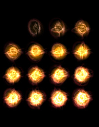
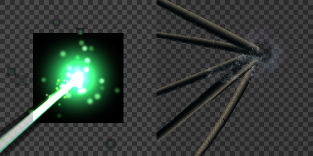
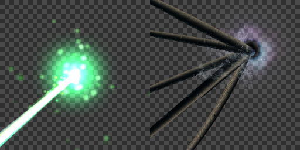
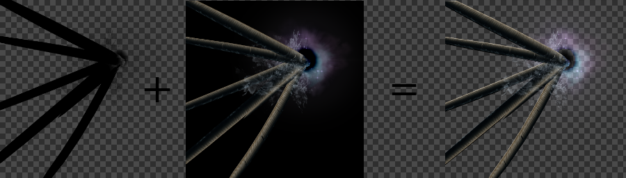

録画¶
概要¶
作成したエフェクトを連番画像や画像やgifアニメとして出力します。 TwitterやBlog等に作成したエフェクトを掲載する時、Effekseerで作成したエフェクトを直接再生できない時、エフェクトを再生する負荷が気になる時といった状況では、この機能が非常に便利です。
 |  |
パラメーター¶
録画範囲(解像度)¶
横幅縦幅¶
アニメーションの1枚あたりの画像の大きさを設定します。
Scale¶
録画範囲を実際の画面より拡大して録画します。 例えば、横幅縦幅が256でScaleが2の場合、256の範囲を2倍に拡大して録画し512の解像度の画像を出力します。
録画範囲を表示¶
チェックを入れると画面に録画範囲が表示されます。
出力フレーム¶
開始フレーム¶
ファイルに出力する映像の範囲の開始フレームを設定します。
終了フレーム¶
ファイルに出力する映像の範囲のエフェクトの終了フレームを設定します。
出力頻度(フレーム毎)¶
ファイルを出力する時の頻度を設定します。 例えば、1を設定した場合、60フレーム録画すると60枚画像が出力されます。 2を設定した場合、60フレーム録画すると30枚画像が出力されます。 このように数値を大きくするとファイルサイズは小さくなる代わりに映像が飛び飛びになります。
出力形式¶
「1枚にまとめて出力」「連番画像として出力」「Gifアニメーションとして出力」「Aviファイルとして出力」の4種類があります。
「1枚にまとめて出力」は、左上から右上に向かってアニメーションを配置した画像です。横方向枚数に指定した数値の数だけ横方向に画像が並びます。縦方向には録画フレーム数/横方向枚数の画像が並びます。
「連番画像として出力」は、撮影した画像に番号をつけて出力します。
「Gifアニメーションとして出力」は、撮影した画像をGifアニメにして出力します。
「Aviファイルとして出力」は、無圧縮のアルファチャンネルを含んだ動画として出力します。
| 1枚にまとめて出力 | 連番画像として出力 | Gifアニメーションとして出力 |
|  |  | |
背景透明化の方法¶
gifアニメを除いて背景の扱い方を指定できます。

元の画像¶
透明な背景を使用します。背景が黒い画像を加算で使用している場合、おかしくなることがあります。

生成(ブレンド+可算)¶
録画した結果を通常と加算に分離して出力することで、背景を変えた場合の色を可能な範囲で再現できます。 通常と加算が混ざったエフェクトも録画できます。
使用する場合は、ブレンドの画像をブレンドで描画した後に、加算の画像を加算で描画します。

録画設定の保存先指定¶
本体かプロジェクトかどちらに録画設定を保存するか指定できます。